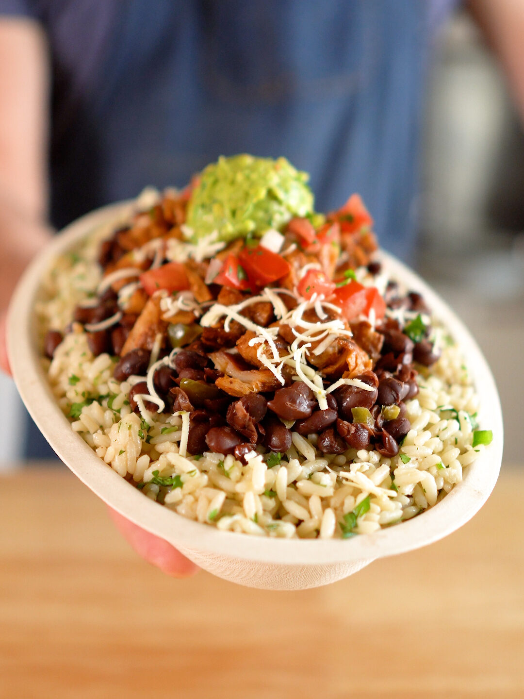

Chipotle Burrito Bowls

Chicken and Marinade
- 1 3/4 lbs Chicken Breast
- 1/3 cup red onion, chopped
- 3 cloves garlic
- 2 tbsp vegetable oil, plus more for grilling
- 2 tbsp lime juice
- 1 chipotle in adobo sauce
- 1 tbsp sauce from chipotles in adobo
- 1 tsp each: smoked paprika, Mexican oregano, cumin
- 3/4 tsp sea salt
Cilantro Lime Rice
- Jasmine or white rice
- Yellow onion, diced
- 1 clove garlic, minced
- 1 bay leaf
- Butter
- Lime, zest & juice
- Cilantro, chopped
- Salt
Black Beans
- 1 tablespoon oil
- 1 small onion (diced)
- 6 cloves garlic (minced)
- 6 cloves garlic (minced)
- ½ tablespoon cumin
- 1 tablespoon chili powder (NOTE: This will be SPICY! If you don't like heat, I'd start with a teaspoon of chili powder and add more later, if desired)
- ½ teaspoon cayenne pepper
- 1 teaspoon smoked paprika
- 1 teaspoon salt
- 2 cans black beans (approximately 19 ounce in each can)
- 1 cup water
- Juice of 1 lime
- Juice of 1 lemon
Pico de Gallo
- Roma Tomatoes
- Red onion, diced
- Cilantro, chopped
- Jalapeno
- Lime juice
- Lemon juice
- Salt
Other Toppings
- Sour cream, whisked in a small bowl to create the drizzleable sour cream Chipotle uses
- Monterey Jack cheese, shredded
Chicken & Marinade:Add all Chicken and Marinade ingredients except the chicken breasts to a food processor and pulse until the onion is pureed and the ingredients are well combined. Pour marinade over trimmed chicken breasts, toss to coat evenly, cover, and refrigerate for at least 4 hrs or up to overnight.
Pre-heat grill to 425°F (though anywhere between 400-450° will work). Once pre-heated, use grill tongs and a bunched up paper towel to brush the grill grates with vegetable oil. Add the marinated chicken thighs to the oiled grill grates and grill for about 6 minutes per side or until cooked through. (I've also justed cooked this on the stove and it still turns out pretty well.)
Remove chicken from the grill and rest for at least 5 minutes before chopping into bite sized pieces.
Cilantro Lime Rice: I don't use precise measurements for this receipe. I pretty much just throw in what looks like a good amount and then taste multiple times at the end to make sure I have the desired amounts of lime, cilantro, and salt.
Rinse the desired amount of jasmine rice (I usually do a cup or cup and a half). Add water and rice to rice cooker (1 cup of rice to 1.25 cups water) along with diced onion, minced garlic, and 1 bay leaf. Cook rice.
When the rice is done, fluff it and add a pad of butter, lime zest (half to 1 whole lime, depending on how potent you want the lime flavor), lime juice, cilantro, and salt, all to taste.
Black Beans:Wash and drain the canned black beans (2 cans).
In a medium sized frying pan or pot, on medium heat add the oil (1 TBS) and 1 small diced onion. Sauté for 1-2 minutes or until translucent.
Add the minced garlic (6 cloves). Sauté until fragrant, 1-2 minutes.
Add the bay leaf, cumin, chili powder (1 TBS - this will be spicy! Add less if you don't like heat), cayenne pepper (1/2 tsp), smoked paprika (1 tsp) and salt (1 tsp). Sauté for 1-2 minutes or until fragrant
Add the drained and rinsed beans and 1 cup of water. Bring to a simmer and let simmer for 10-15 minutes or until thickened.
Add the lime juice (1 lime) and lemon juice (1 lemon). Stir and season to taste with additional salt as desired.
Pico de Gallo:
Remove the seeds and juice from the tomatoes. Chop everything finely and mix it all together. Add salt, lime, and lemon to taste.